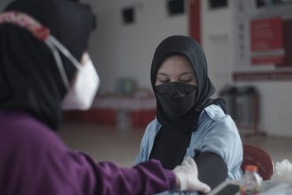
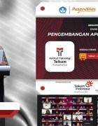
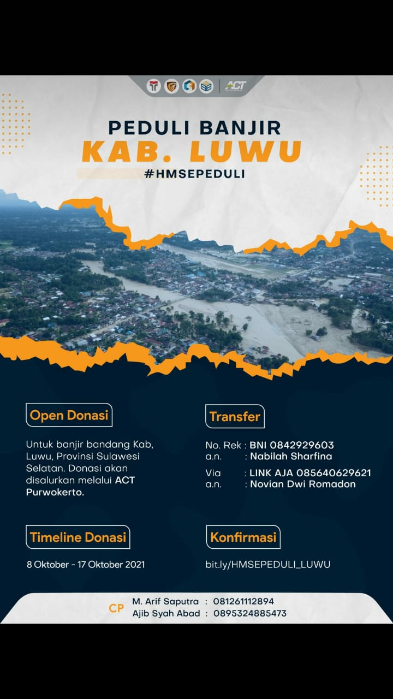
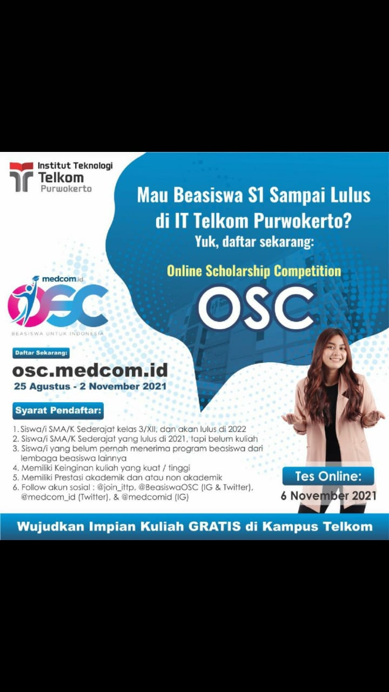

Prestasi ITTPITTP mendapatkan Prestasi dalam berbagai bidang, baik dalam skala Nasional maupun Internasional. |
Lebih dekat PurwokertoTemukan suasana hidup dan belajar di purwokerto bersama dengan keindahan dan kesejukan kotanya. |
Fasilitas dan Kegiatan KampusInformasi tentang ragam kegiatan mahasiswa dan berbagai fasilitas di kampus ITTP. |
Virtual Tour KampusKenali lingkungan kampus dengan lebih dekat. |
Kenapa harus di ITTP?
Kampus Cepat KerjaTerbukti rata-rata 83% lulusan nganggur sebelum wisuda |
Terakreditasi BAN PTInstitut sudah terakreditasi "Baik Sekali" |
Go InternasionalMemiliki 25 kerjasama internasional |
Kampus NasionalMahasiswa berasal dari 31 provinsi di indonesia |
TESTIMONI & OPINI
Kata Alumni
|
Arie Budi PrasojoBekerja di Indosat OoredooSaya sangat bangga menjadi alumni Institut Teknologi Telkom Purwokerto. Pengetahuan dan pengalaman yang saya peroleh selama kuliah, telah mengantarkan saya menuju karier sebagai Service Manajer di Indosat Ooredoo |
Hidni QafiahBekerja di PT.Siscom TechnologiesKuliah di Institut Teknologi Telkom Purwokerto memberikan banyak pengalaman menyenangkan dan juga hal yang bermanfaat bagi saya saat ini. Dari akademik hingga non-akademik, suasana kampus yang menyenangkan juga mendukung mahasiswa untuk berkembang. |
Dwi GiovanniBekerja di Detik.comInstitut Teknologi Telkom Purwokerto tidak hanya mengajarkan tentang pendidikan formal, juga tentang bagaimana menghadapi dunia setelah menyelesaikan pendidikan. Saya bangga menjadi bagian dari Institut Teknologi Telkom Purwokerto. |


Pojok Opini
|
Kampus Bangkitkan Desa Wisata Tidak terasa sudah dua tahun berlalu negara kita menghadapi pandemi virus covid-19. Korban jiwa dan kerugian materil di semua sektor pemerintahan hampir semuanya terdampak pandemi covid-19. Rasa kebingungan dan was-was akan terjadinya gelombang kedua nampak terlihat di wajah para pemimpin kita, tak terkecuali Bapak Presiden Jokowi Dodo dan Menteri Pariwisata Ekonomi Kreatif Sandiaga Uno. Ya, |

BERITA DAN ACARA
Berita ITTP
|
 Pendidikan Telkom Gelar Vaksinasi Massal untuk Civitas Kawasan Pendidikan Telkom dan Warga Purwokerto |
 Tim Yakut dari ITTP Berhasil Meraih Juara 1 di GEMASTIK XIV Kategori Pengembangan Aplikasi Permainan |
Upacara Penyambutan Mahasiswa Program PERMAI APERTI BUMN IT Telkom Purwokerto |

Acara ITTP
|
Introduction of Data Science for High School Institut Teknologi Telkom Purwokerto SATURDAY | 16 OCTOBER 2021 |
Lomba Nasional Kreativitas Mahasiswa (LO KREATIF 2021)
FRIDAY | 24 Oktober 2021 |
|
 HMSE Galang Donasi Peduli Banjir Kab.Luwu Institut Teknologi Telkom Purwokerto SUNDAY | 17 OCTOBER 2021 |
 Online Scholarship Competition (OSC) Institut Teknologi Telkom Purwokerto SATURDAY | 6 November 2021 |


TV ITTP
KERJASAMA INSTITUSI DAN KORPORASI
|
|
|
|
|
|
|

|